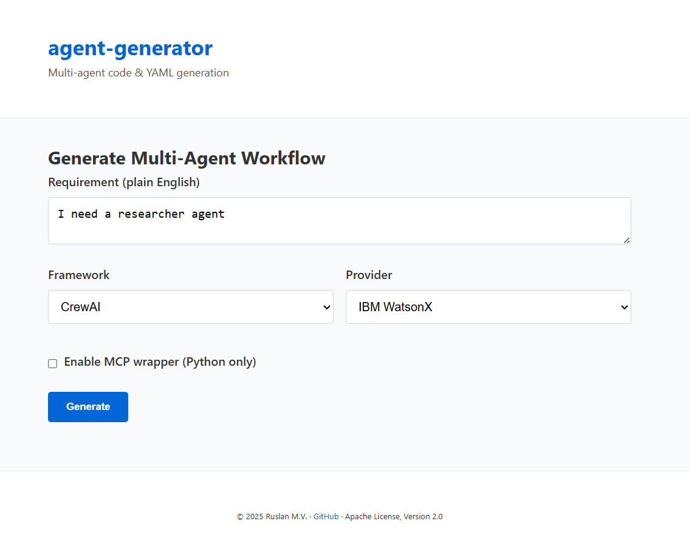

Usage Guide¶
This page covers common workflows for both the CLI and the Flask Web UI.
For installation instructions see Installation.
1 Command‑line interface¶
1.1 Basic syntax¶
agent-generator [OPTIONS] "plain‑English requirement"
1.2 Frequently used flags¶
| Flag / Option | Description | Example |
|---|---|---|
-f, --framework * |
Which generator to use (crewai, langgraph, …). |
--framework crewai |
-p, --provider |
LLM back‑end (watsonx default, or openai). |
--provider openai |
--model |
Override default model for the provider. | --model gpt-4o |
--temperature |
Sampling randomness (0–2). | --temperature 0.3 |
--max-tokens |
Response length cap. | --max-tokens 2048 |
--mcp / --no-mcp |
Wrap Python output in an MCP FastAPI server. | --mcp |
-o, --output PATH |
Write result to file instead of stdout. | -o team.py |
--dry-run |
Build workflow + code skeleton but skip LLM call. | --dry-run |
--show-cost |
Print token counts & approximate USD cost. | --show-cost |
1.3 Common recipes¶
| Goal | Command |
|---|---|
| Orchestrate YAML from one‑liner | agent-generator "Email summariser" -f watsonx_orchestrate -o summariser.yaml |
| CrewAI Flow with MCP wrapper | agent-generator "Analyse tweets" -f crewai_flow --mcp -o tweets_flow.py |
| Cost estimate only | agent-generator "Scrape website" -f react --dry-run --show-cost |
| Use OpenAI instead of WatsonX | agent-generator "Write jokes" -f react -p openai --model gpt-4o |
2 Flask Web UI¶
2.1 Run locally¶
FLASK_APP=agent_generator.web FLASK_ENV=development flask run
# visit http://localhost:5000
2.2 Workflow¶
- Fill in prompt – describe your requirement.
- Pick framework & provider – drop‑downs.
- (Optional) toggle MCP wrapper.
- Click Generate.
- Download the code/YAML or copy‑paste from the preview.
- Mermaid diagram appears under the code for quick validation.

3 Docker usage¶
docker build -t agent-generator .
docker run -e WATSONX_API_KEY=... -e WATSONX_PROJECT_ID=... \
-p 8000:8000 agent-generator
# Web UI → http://localhost:8000
You can also exec into the container to run the CLI:
docker run --rm agent-generator agent-generator "Say hi" -f react --dry-run
4 Serving generated MCP skills¶
Every Python framework (crewai, crewai_flow, langgraph, react) can be generated with an MCP wrapper:
agent-generator "...data pipeline..." -f langgraph --mcp -o pipeline.py
python pipeline.py serve # exposes POST /invoke on port 8080
Upload the packaged script or its Docker image to your MCP Gateway and then import it as a custom skill in WatsonX Orchestrate.
5 Troubleshooting¶
| Symptom | Resolution |
|---|---|
| CLI raises 401 (WatsonX) | Verify WATSONX_API_KEY, WATSONX_PROJECT_ID, region URL. |
ModuleNotFoundError: flask |
pip install "agent-generator[web]" |
| Diagram doesn’t render in UI | Check browser console – Mermaid JS must load (make sure unpkg.com isn’t blocked). |
| High cost estimate | Lower --max-tokens or pick llama‑3‑8b instead. |
| Gateway import fails | Ensure you used --mcp and port 8080 is exposed. |
Still stuck? Open an issue on the GitHub tracker.
Jump in: Installation ➜ · Usage ➜ · Frameworks ➜